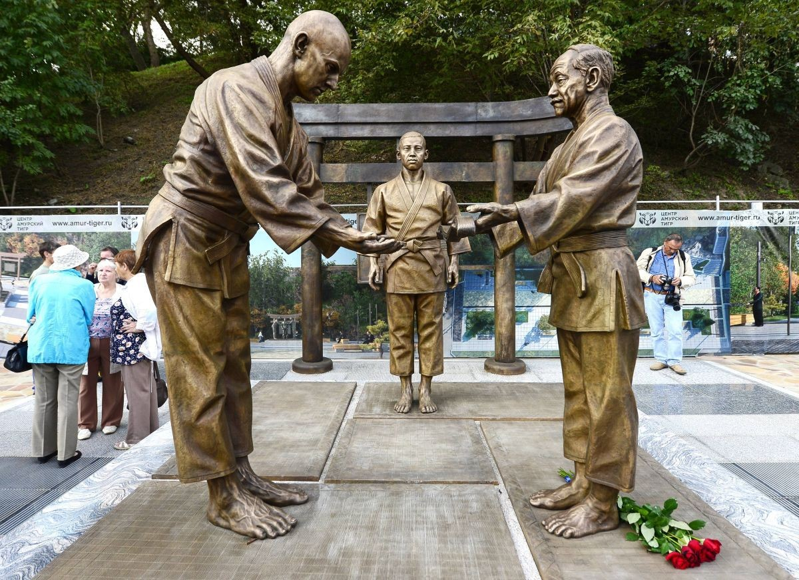
On January 7, 1893, Vasili Oshchepkov was born on Sakhalin Island in the Russian Empire.In 1913, Jigoro Kano, the founder of Judo, awarded Vasili Oshchepkov a first-degree black belt. After continuing his training, Oshchepkov eventually became the first Russian to hold a Judo black belt, as well as the first Russian to attain the rank of second dan./p>
After returning to Russia, he worked as an intelligence operative under the Russian Empire and devoted himself to the spread of Judo, including organizing international Judo competitions./p>
Drawing upon his experience of living in Japan, he became involved in business between the Soviet Union and Japan after the Russian Empire collapsed and the Soviet Union was established. He was also appointed as a professor at the Russian National University of Physical Education, Sport, Youth and Tourism./p>
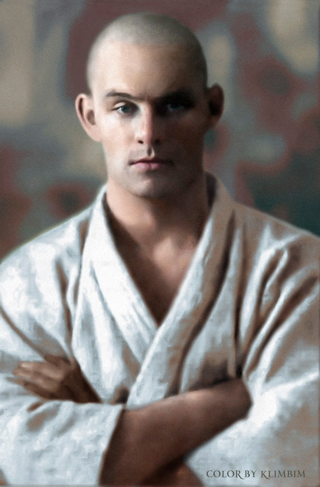
Vasili Oshchepkov
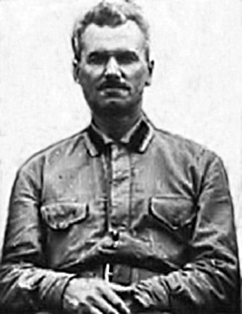
Viktor Spiridonov
During this period, he studied close-quarters combat for military personnel and analyzed various martial arts from around the world. He also met Viktor Spiridonov, a Soviet officer who had studied Japanese jujutsu. The two began researching systems of hand-to-hand combat and physical conditioning for soldiers, and their work would become the foundation of Sambo.
However, Viktor died of lung cancer during the Second World War, while Vasili became a target of Stalin's purges because of his friendly relations with Japan and eventually died in prison.
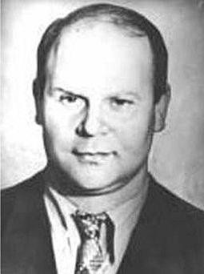
Anatoly Kharlampiev
Later, Anatoly Kharlampiev, a student of Viktor and a Judo practitioner at the Russian National University of Physical Education, refined the foundations of the combat system developed by the two men. Drawing upon boxing, wrestling, gymnastics, and other disciplines, he completed the martial art and gave it the name “Sambo.”
Sambo was subsequently spread throughout the Soviet Union as a sport, where its distinctive leg-lock techniques underwent remarkable development. It was also adopted by the Red Army as a combat system for military personnel.
Because Soviet special forces personnel were trained in Sambo, some of them also went on to compete in Olympic sports such as boxing and wrestling.
Following the dissolution of the Soviet Union, Sambo began to spread throughout the world because of its distinctive aggressiveness and powerful techniques. In South Korea, the Korea Sambo Federation was officially established in 2004 and worked to promote the spread of Sambo.
Sambo has since been adopted as a sport at the European Games and has also been featured as a demonstration sport at the Olympics, making it a combat sport with considerable potential for the future.
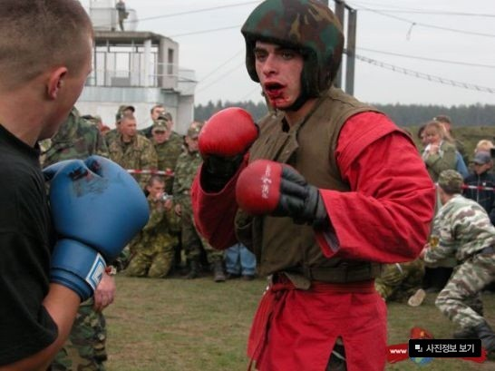
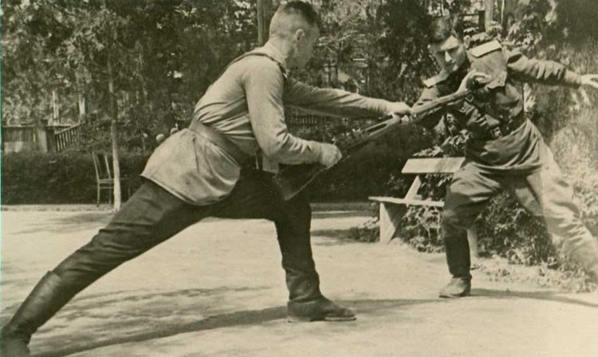
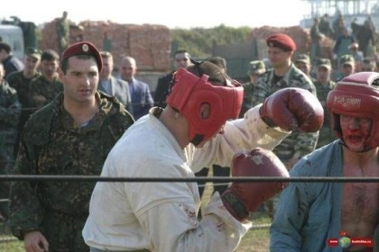
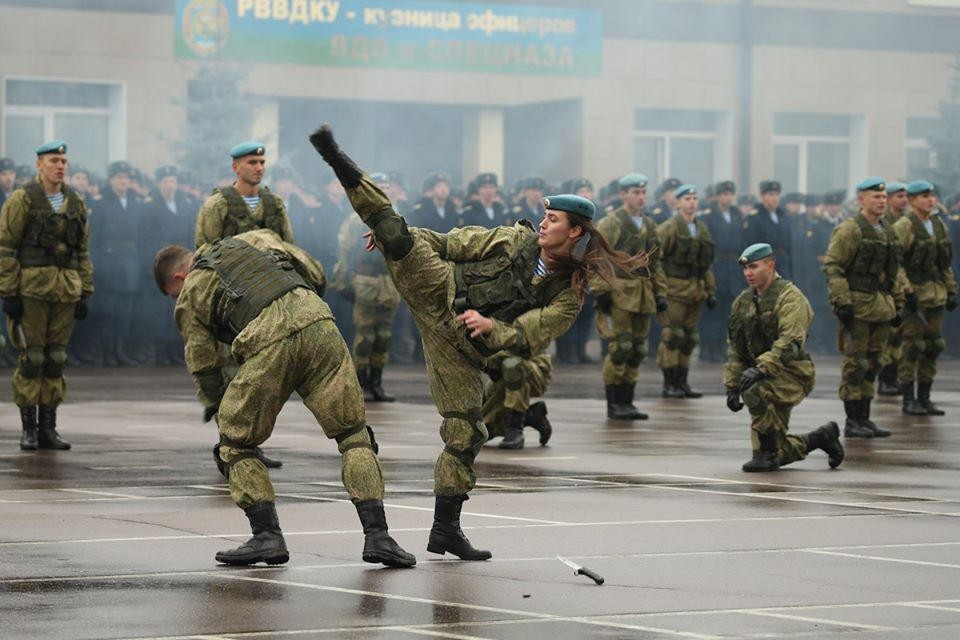
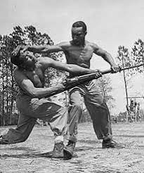
All Russian soldiers train in Sambo, and recruits seeking to join elite units such as the Spetsnaz and the Russian Airborne Forces are required to withstand Sambo sparring sessions against senior soldiers. There are currently several disciplines of Sambo, including Sport Sambo, Combat Sambo, and the more recently introduced Beach Sambo. Sport Sambo allows most forms of grappling techniques except choking techniques, while Combat Sambo is the discipline practiced by the Russian military and resembles mixed martial arts. It is particularly noteworthy for allowing techniques that are prohibited in MMA, such as headbutts and striking while gripping the opponent's jacket. 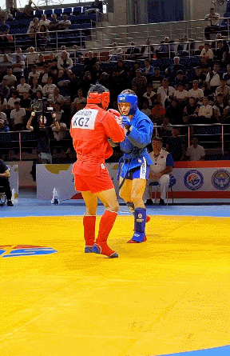 A combination of Judo, wrestling, traditional Japanese jujutsu, European wrestling, boxing, and Savate, Sambo produces a distinctive style of competition. One notable example is that it retains Judo's pinning points and ippon victories. In the video above, if the match had been fought under MMA rules, the athlete in the red uniform would have landed several clean strikes. In Sambo, however, the match ultimately resulted in the athlete taking an early five-point lead and then scoring four additional points with a final throw, resulting in a victory declaration with an eight-point advantage. This demonstrates that Sambo is not merely a sport, but a martial art whose techniques were developed with lethal combat in mind. 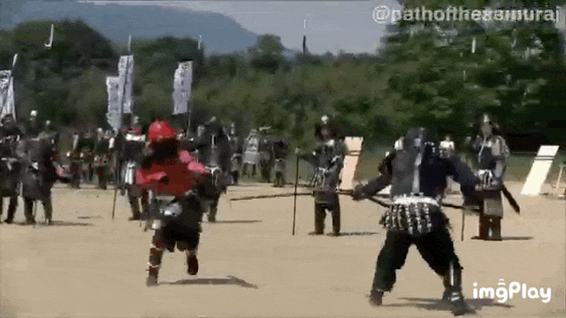 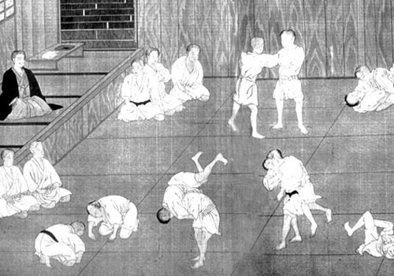 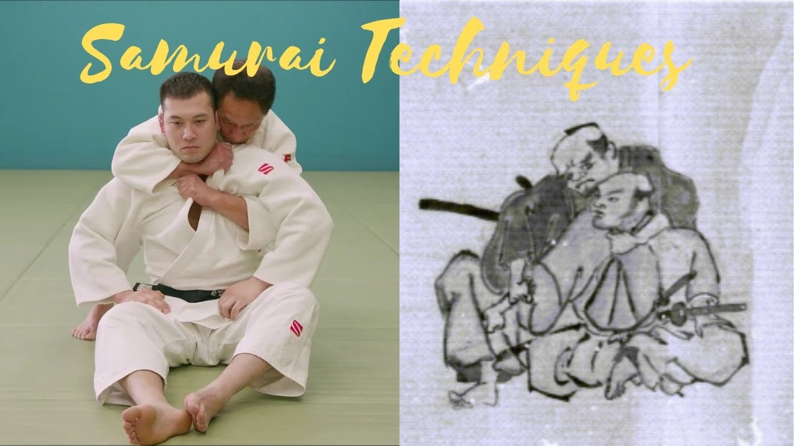 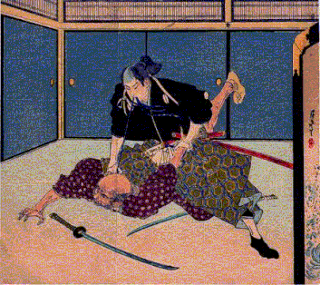 Japanese samurai were heavily protected by powerful armor, leaving only limited areas of the body—such as the wrists, armpits, and backs of the knees—vulnerable to attack. For this reason, samurai trained in traditional forms of jujutsu, such as Tenjin Shinyo-ryu Jujutsu, which later contributed to the development of modern Judo and Sambo. In situations where swords had already been engaged at close range, known as aiki, a samurai could use jujutsu to throw an opponent to the ground and then employ a dagger to strike through gaps in the armor and kill him. 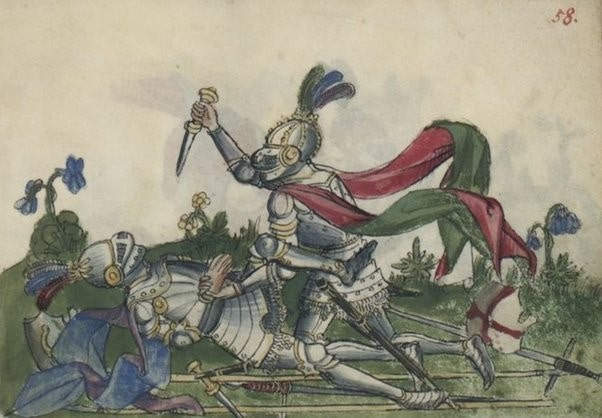 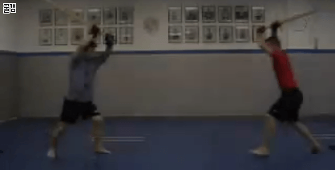 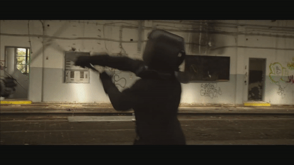 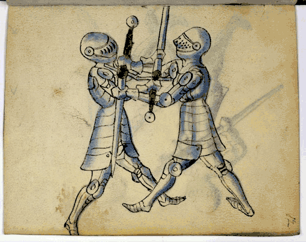 This is comparable to the way ancient Roman wrestling spread throughout different parts of Europe, eventually becoming various forms of folk wrestling and influencing the development of European swordsmanship. The pin-fall victory in wrestling likewise developed from the practice of forcing down an opponent while both fighters were wearing armor. 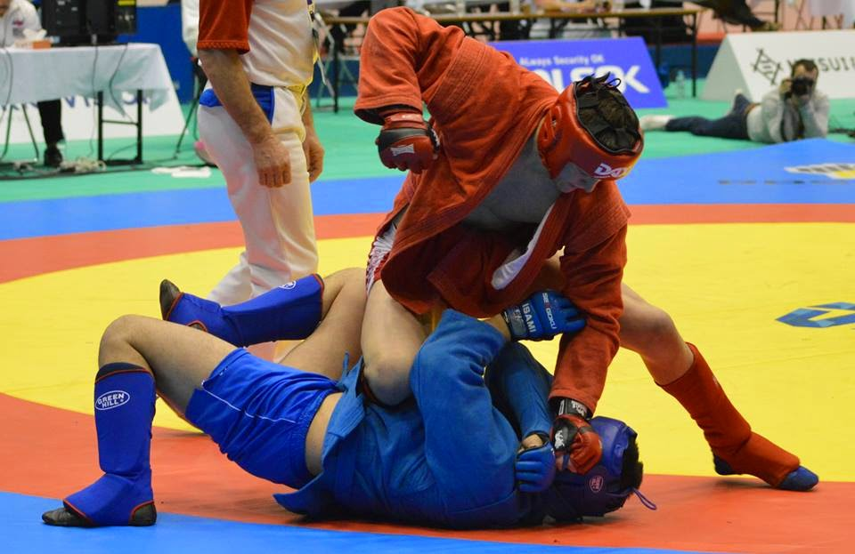 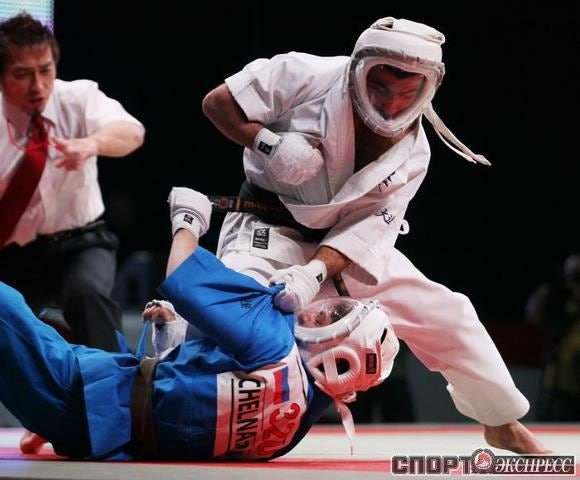 Today, when discussing the strongest martial arts in the grappling family, many martial artists would name Brazilian Jiu-Jitsu (BJJ). Its techniques are highly refined and sophisticated. However, Brazilian Jiu-Jitsu and Sambo were born from fundamentally different circumstances. Sambo was designed with the objective of rapidly defeating an enemy in close combat within an enemy trench while bullets were flying overhead. Consequently, while Sambo may be less technically refined on the ground than Brazilian Jiu-Jitsu, its rapid application of pain-compliance techniques whenever an opening appears, its powerful pinning techniques, and its unorthodox throws make it highly competitive with other martial arts. The pinning techniques of Sambo, much like those of Judo, are based on the principle that successfully holding an opponent down for twenty seconds creates an opportunity to use a weapon to take the opponent's life. For this reason, Sambo places a greater emphasis on grappling than Kudo, a martial art derived from Kyokushin Karate that, like Sambo, combines a uniform-based combat system with mixed martial arts. Written by Kyungmin Kim